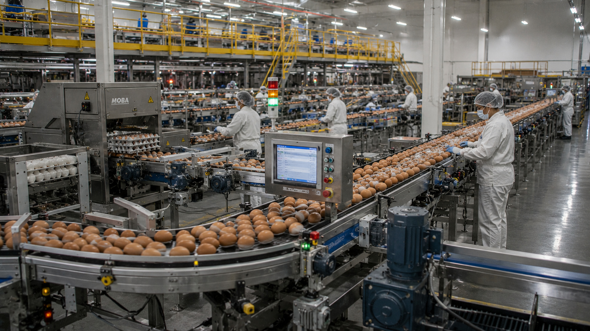
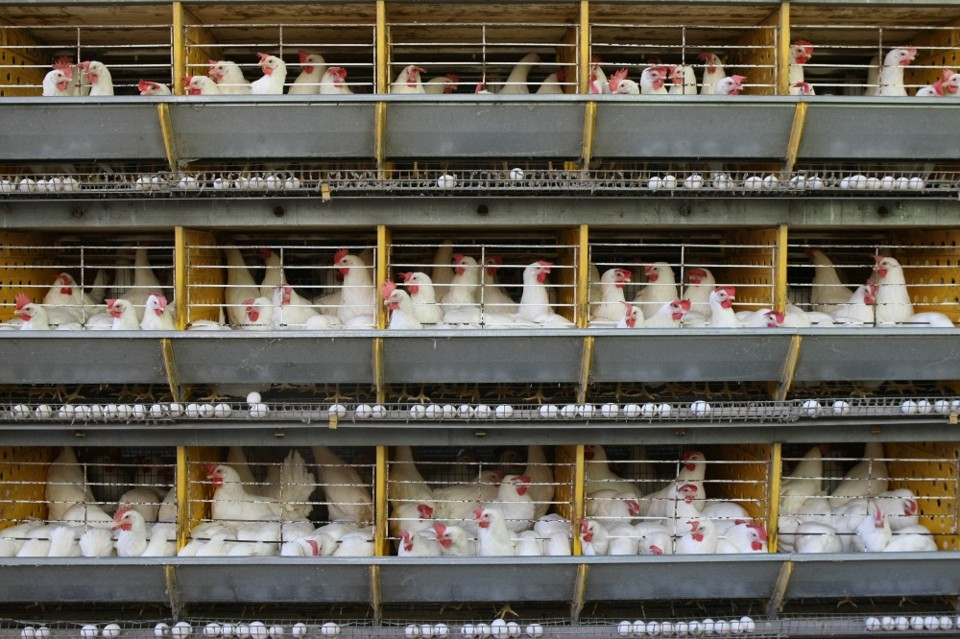
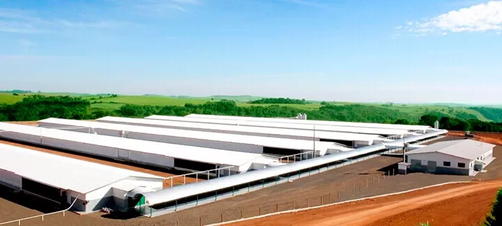
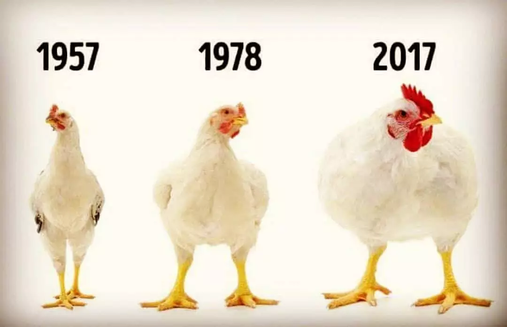

O Futuro da Produção Automatizada
A avicultura de postura vem inovando continuamente ao longo dos anos para atender as exigências do consumidor, cada vez mais exigente, visando também diminuir as perdas produtivas nos diferentes sistemas de produção. Fato esse notável diante da tendência de automação e inovação do sistema de postura, através da utilização de esteiras para a coleta dos ovos e fezes, arraçoamento automático, bem como o monitoramento em tempo real das condições ambientais no interior dos galpões em sistemas controlados.
Dessa forma, o objetivo desse trabalho foi avaliar a influência dos diferentes sistemas de criação sobre o bem-estar animal, produtividade das aves e qualidade do product.

Modelos de Production no Brasil
O Brasil tem se destacado mundialmente pela utilização de cinco modelos de produção de ovos. Conheça as características e os desafios de cada sistema focado em nutrição de precisão e bem-estar:
Sistema intensivista tradicional focado em alta densidade populacional e otimização máxima do espaço. Apresenta índices elevados de produtividade, porém impõe severas restrições ao comportamento natural das aves poedeiras.

Galpões adaptados onde as aves se movimentam livremente pelo chão, contando com ninhos, poleiros e substratos para banho de poeira, promovendo maior expressão de comportamento natural e bem-estar animal.
Aves criadas em galpões internos, mas com acesso diário garantido a áreas externas cobertas por vegetação (piquetes), permitindo pastejo, banho de sol e exploração do ecossistema natural.

Segue linhagens específicas de crescimento lento e alimentação majoritariamente vegetal, respeitando rígidas normas nacionais de pastejo e proibição de promotores de crescimento químicos.
Alinhado à certificação ecológica. Toda a alimentação fornecida deve ser de origem orgânica certificada livre de transgênicos ou agrotóxicos, priorizando a máxima sustentabilidade do ecossistema local.
Cenário Regulatório e Bem-Estar
Desafio Produtivo
Verifica-se que no Brasil, a maior parte das aves poedeiras comerciais são criadas em sistemas intensivos de gaiolas e que não atendem às exigências de bem-estar animal, mesmo apresentando índices elevados de produtividade.
Legislação e Métricas
A legislação brasileira, carente de métricas específicas e de fiscalização mais eficiente, auxilia os produtores indiretamente através de pouco comprometimento e engajamento com ações que garantam o bem-estar animal, paralelamente com a produtividade e o sucesso econômico do setor avícola.

Faz-se necessário que ações preventivas de sanidade e assertivas de manejo, nutrição, alimentação e comercialização garantam aos consumidores alimentos cada vez mais saudáveis, criados num ambiente mais confortável.
Interação com o Leitor
Compartilhe sua opinião sobre o avanço tecnológico e o bem-estar na avicultura moderna.